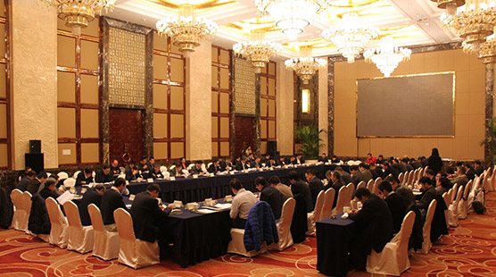

房屋面积
测试文字于2017年11月更名)成立于2009年4月8日，注册资金7500万元，员工340人，地处成都市新津县工业园区希望路，专注于工程机械研发、生产、制造与应用。
测试文字测试文字测试文字测试文字公司为四川省重大装备企业，通过了质量、环境及职业健康安全三大管理体系认证，为安全标准化三级企业；公司产品列入2017年度成都市地方名优产品推荐目录，入选2017年省级名优产品，并荣获2016中国混凝土搅拌站用户产品品牌关注度十强；公司拥有3个专业的产品技术设计室，具有强大的研发能力与制造能力。

测试文字测试文字测试文字测试文字公司为四川省重大装备企业，通过了质量、环境及职业健康安全三大管理体系认证，为安全标准化三级企业；公司产品列入2017年度成都市地方名优产品推荐目录，入选2017年省级名优产品，并荣获2016中国混凝土搅拌站用户产品品牌关注度十强；公司拥有3个专业的产品技术设计室，具有强大的研发能力与制造能力。
测试文字测试文字测试文字测试文字公司为四川省重大装备企业，通过了质量、环境及职业健康安全三大管理体系认证，为安全标准化三级企业；公司产品列入2017年度成都市地方名优产品推荐目录，入选2017年省级名优产品，并荣获2016中国混凝土搅拌站用户产品品牌关注度十强；公司拥有3个专业的产品技术设计室，具有强大的研发能力与制造能力。